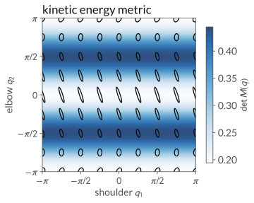
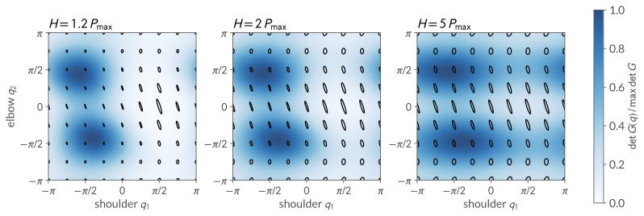
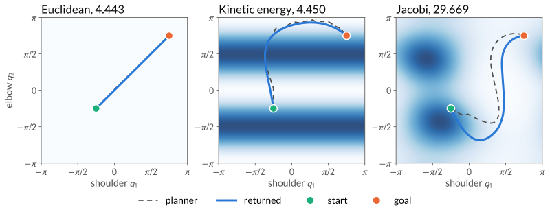

Minimum-Energy Planning on Configuration Manifolds#
In this tutorial, we plan a two-link planar arm from one configuration to another under three metrics, the Euclidean metric on the joint angles, the kinetic-energy metric and the Jacobi metric [1][2][3], and we compare the three motions.
The arm along the Euclidean (left), kinetic-energy (center) and Jacobi (right) paths. The slider and the play button advance all three by the same fraction of their metric length, and the dotted curve traces the hand.
The full script is examples/tutorials/minimum_energy_planning.py, and the C++ version is
examples/tutorials/minimum_energy_planning.cpp. Planning needs the Linux or macOS wheel
(see Installation).
import numpy as np
import geodex
Full example: examples/tutorials/minimum_energy_planning.py
#include <cmath>
#include <cstdio>
#include <algorithm>
#include <utility>
#include <vector>
#include <geodex/geodex.hpp>
#include <geodex/planning/plan.hpp>
namespace gp = geodex::planning;
Full example: examples/tutorials/minimum_energy_planning.cpp
1. Define the mass matrix#
The arm has two links of length \(l_1, l_2\) and mass \(m_1, m_2\), with their centers of mass at \(l_{c1}, l_{c2}\) from the joints and moments of inertia \(I_1, I_2\). The defaults below are uniform rods of 1 m and 1 kg. The mass matrix of the joint angles \(q = (q_1, q_2)\) is
The metrics of geodex take the mass matrix as a callable, a function object in either language.
class PlanarArmMassMatrix:
"""Mass matrix M(q) of a two-link planar arm with uniform rods."""
def __init__(self, l1=1.0, l2=1.0, m1=1.0, m2=1.0, lc1=0.5, lc2=0.5,
I1=1 / 12, I2=1 / 12):
self.l1, self.m1, self.lc1, self.I1 = l1, m1, lc1, I1
self.l2, self.m2, self.lc2, self.I2 = l2, m2, lc2, I2
def __call__(self, q):
c2 = np.cos(q[1]) # cos(q2), the elbow coupling term
h = self.l1 * self.lc2 * c2 # inertial coupling coefficient
m00 = self.I1 + self.I2 + self.m1 * self.lc1**2 + self.m2 * (
self.l1**2 + self.lc2**2 + 2.0 * h
)
m01 = self.I2 + self.m2 * (self.lc2**2 + h)
m11 = self.I2 + self.m2 * self.lc2**2
return np.array([[m00, m01], [m01, m11]])
Full example: examples/tutorials/minimum_energy_planning.py
/// Mass matrix M(q) of a two-link planar arm with uniform rods.
struct PlanarArmMassMatrix {
double l1 = 1.0, l2 = 1.0, m1 = 1.0, m2 = 1.0;
double lc1 = 0.5, lc2 = 0.5;
double I1 = 1.0 / 12.0, I2 = 1.0 / 12.0;
Eigen::Matrix2d operator()(const Eigen::Vector2d& q) const {
const double c2 = std::cos(q[1]); // cos(q2), the elbow coupling term
const double h = l1 * lc2 * c2; // inertial coupling coefficient
Eigen::Matrix2d M;
M(0, 0) = I1 + I2 + m1 * lc1 * lc1 + m2 * (l1 * l1 + lc2 * lc2 + 2.0 * h);
M(0, 1) = I2 + m2 * (lc2 * lc2 + h);
M(1, 0) = M(0, 1);
M(1, 1) = I2 + m2 * lc2 * lc2;
return M;
}
};
Full example: examples/tutorials/minimum_energy_planning.cpp
2. Build the kinetic-energy space#
The kinetic-energy metric measures a joint velocity by \(\dot q^\top M(q)\, \dot q\), twice the kinetic energy of the motion. The configuration space is \(\mathbb{R}^2\) with the planner’s bounds \([-\pi, \pi]^2\) and this metric.
mass_fn = PlanarArmMassMatrix()
# Joint space [-pi, pi]^2. plan() searches the sampling bounds of the base manifold.
base = geodex.Euclidean(2)
base.set_sampling_bounds(np.array([-np.pi, -np.pi]), np.array([np.pi, np.pi]))
ke_metric = geodex.KineticEnergyMetric(mass_fn)
cspace_ke = geodex.ConfigurationSpace(base, ke_metric)
Full example: examples/tutorials/minimum_energy_planning.py
PlanarArmMassMatrix mass_fn;
// Joint space [-pi, pi]^2. plan() searches the sampling bounds of the base
// manifold.
geodex::Euclidean<2> base;
base.set_sampling_bounds(Eigen::Vector2d(-M_PI, -M_PI),
Eigen::Vector2d(M_PI, M_PI));
geodex::KineticEnergyMetric ke_metric{mass_fn};
geodex::ConfigurationSpace cspace_ke{base, ke_metric};
Full example: examples/tutorials/minimum_energy_planning.cpp
3. Define the potential#
The Jacobi metric adds gravity through the potential energy of the two links,
def potential(q, g=9.81, m1=1.0, m2=1.0, l1=1.0, lc1=0.5, lc2=0.5):
"""Gravitational potential P(q), the mass-weighted heights of the two link
centers."""
return (m1 * g * lc1 * np.sin(q[0])
+ m2 * g * (l1 * np.sin(q[0]) + lc2 * np.sin(q[0] + q[1])))
Full example: examples/tutorials/minimum_energy_planning.py
/// Gravitational potential P(q), the mass-weighted heights of the two link centers.
double potential(const Eigen::Vector2d& q) {
constexpr double g = 9.81, m1 = 1.0, m2 = 1.0, l1 = 1.0, lc1 = 0.5, lc2 = 0.5;
return m1 * g * lc1 * std::sin(q[0]) +
m2 * g * (l1 * std::sin(q[0]) + lc2 * std::sin(q[0] + q[1]));
}
Full example: examples/tutorials/minimum_energy_planning.cpp
4. Build the Jacobi space#
For a total energy \(H\) above the potential everywhere, the Jacobi metric is
and its geodesics are the motions of the arm under gravity alone at energy \(H\) [4]. The factor \(2(H - P(q))\) is twice the kinetic energy the arm has left at \(q\). The potential is largest with the arm straight up, \(P_{\max} = g\,(m_1 l_{c1} + m_2(l_1 + l_{c2})) \approx 19.62\) J, and we set \(H = 1.2\,P_{\max}\).
pmax = 9.81 * (1.0 * 0.5 + 1.0 * (1.0 + 0.5)) # arm straight up, about 19.62 J
H = 1.2 * pmax # total energy, 20 percent above the largest potential
jacobi_metric = geodex.JacobiMetric(mass_fn, potential, H)
cspace_jacobi = geodex.ConfigurationSpace(base, jacobi_metric)
Full example: examples/tutorials/minimum_energy_planning.py
const double pmax =
9.81 * (1.0 * 0.5 + 1.0 * (1.0 + 0.5)); // arm straight up, about 19.62 J
const double H =
1.2 * pmax; // total energy, 20 percent above the largest potential
geodex::JacobiMetric jacobi_metric{mass_fn, potential, H};
geodex::ConfigurationSpace cspace_jacobi{base, jacobi_metric};
Full example: examples/tutorials/minimum_energy_planning.cpp
5. Look at the metrics#
A metric ellipse at \(q\) is the unit ball \(\{v : \langle v, v \rangle_q \le 1\}\), the velocities of unit cost. A large ellipse marks a region where motion is cheap.


Kinetic-energy metric ellipses over \([-\pi, \pi]^2\), drawn on a color map of the determinant of \(M(q)\).#
The kinetic-energy ellipses change with the elbow angle \(q_2\) alone. Near \(q_2 = 0\), with the arm stretched out, the shoulder swings both links at full radius, and the ellipses are long and thin, stretched along the elbow direction. Near \(q_2 = \pm\pi\), with the arm folded back, the shoulder’s inertia drops and the ellipses become rounder.


Jacobi metric ellipses at three energy levels. In each panel, the largest ellipse fills its grid cell, and the determinant is divided by its largest value.#
At \(H = 1.2\,P_{\max}\) (left), the factor \(2(H - P(q))\) varies strongly. Where the potential is low, the ellipses shrink and motion is expensive. Where \(P(q)\) approaches \(H\), the ellipses grow and motion is cheap. At \(H = 2\,P_{\max}\) (middle) and \(H = 5\,P_{\max}\) (right), the factor varies less, and the ellipses take the shapes of the kinetic-energy ellipses.
6. Plan under each metric#
We plan the same start and goal once under each metric. G-RRT* runs with the greedy ratio
at zero and the zero heuristic, as an uninformed RRT*, and every metric gets the same
search. iterations=3000 and seed=1 give the same paths on every run.
start = np.array([-np.pi / 4, -np.pi / 4])
goal = np.array([3 * np.pi / 4, 3 * np.pi / 4])
# G-RRT* with the greedy bias off and the zero heuristic runs as an uninformed
# RRT*.
settings = geodex.PlanSettings(
iterations=3000,
seed=1,
planner=geodex.planners.GreedyRRTstar(greedy_ratio=0.0),
)
runs = {}
for label, space in [("Euclidean", base), ("Kinetic energy", cspace_ke),
("Jacobi", cspace_jacobi)]:
result = geodex.plan(space, start, goal, settings=settings,
heuristic=geodex.heuristics.Zero())
print(f"{label:15s} solved={result.solved} cost={result.cost:.4f} "
f"waypoints={len(result.path)}")
runs[label] = result
Full example: examples/tutorials/minimum_energy_planning.py
const Eigen::Vector2d start(-M_PI / 4, -M_PI / 4);
const Eigen::Vector2d goal(3 * M_PI / 4, 3 * M_PI / 4);
// G-RRT* with the greedy bias off and the zero heuristic runs as an uninformed
// RRT*.
gp::PlanSettings settings;
settings.iterations = 3000;
settings.seed = 1;
settings.planner = gp::planners::GreedyRRTstar{.greedy_ratio = 0.0};
auto run = [&](const char* label, const auto& space) {
auto result = gp::plan(space, start, goal, /*is_valid=*/{}, settings,
geodex::heuristics::Zero{});
std::printf("%-15s solved=%d cost=%.4f waypoints=%zu\n", label, result.solved,
result.cost, result.path.size());
return result;
};
const auto flat = run("Euclidean", base);
const auto ke = run("Kinetic energy", cspace_ke);
const auto jacobi = run("Jacobi", cspace_jacobi);
Full example: examples/tutorials/minimum_energy_planning.cpp
It prints
Euclidean solved=True cost=4.4429 waypoints=2
Kinetic energy solved=True cost=4.4500 waypoints=297
Jacobi solved=True cost=29.6691 waypoints=452


The three plans from the start (green) to the goal (orange), over the determinant of each
metric. The dashed line is the planner’s path, with each edge drawn along the curve the
planner checked, and the blue line is the path that plan returns. Each title names the
metric and the length of the returned path under it.#
Under the Euclidean metric, the returned path is the straight line in joint space, of length \(\pi\sqrt{2} \approx 4.443\). The kinetic-energy path folds the elbow toward \(q_2 = \pi\), swings the shoulder, and unfolds the elbow at the end. With the elbow folded, the shoulder’s effective inertia \(M_{11}(q) = \tfrac{5}{3} + \cos q_2\) is smallest. The path’s kinetic-energy length is 4.450, against 5.850 for the straight line. The Jacobi path swings through configurations where the arm is raised, around \(q_1 = \pi/2\), where the arm has little kinetic energy left and the metric is small. Its Jacobi length is 29.67, against 33.24 for the straight line. Lengths under different metrics measure different quantities.
Note
The zero heuristic is admissible for every metric. The default Euclidean chord is not admissible under the kinetic-energy metric, whose smallest eigenvalue drops to about 0.07 with the arm stretched out (\(q_2 = 0\)), and some paths are shorter than their chord.
7. Try it: raise the energy#
Plan the Jacobi metric again at \(H = 5\,P_{\max}\) and compare how far each path folds the elbow.
high_metric = geodex.JacobiMetric(mass_fn, potential, 5.0 * pmax)
high = geodex.ConfigurationSpace(base, high_metric)
high_result = geodex.plan(high, start, goal, settings=settings,
heuristic=geodex.heuristics.Zero())
for label, result in [("Kinetic energy", runs["Kinetic energy"]),
("Jacobi, H = 1.2 Pmax", runs["Jacobi"]),
("Jacobi, H = 5 Pmax", high_result)]:
elbow = np.abs(result.path[:, 1]).max()
print(f"{label:21s} largest elbow angle {elbow:.3f} rad")
Full example: examples/tutorials/minimum_energy_planning.py
geodex::JacobiMetric high_metric{mass_fn, potential, 5.0 * pmax};
geodex::ConfigurationSpace high{base, high_metric};
const auto high_result = gp::plan(high, start, goal, /*is_valid=*/{}, settings,
geodex::heuristics::Zero{});
for (const auto& [label, result] :
{std::pair{"Kinetic energy", &ke},
std::pair{"Jacobi, H = 1.2 Pmax", &jacobi},
std::pair{"Jacobi, H = 5 Pmax", &high_result}}) {
double elbow = 0.0;
for (const auto& q : result->path) elbow = std::max(elbow, std::abs(q[1]));
std::printf("%-21s largest elbow angle %.3f rad\n", label, elbow);
}
Full example: examples/tutorials/minimum_energy_planning.cpp
It prints
Kinetic energy largest elbow angle 2.925 rad
Jacobi, H = 1.2 Pmax largest elbow angle 2.356 rad
Jacobi, H = 5 Pmax largest elbow angle 2.889 rad
At the higher energy, the Jacobi path folds the elbow like the kinetic-energy path, and the figure of step 5 shows the same trend in the ellipses.
Where to go next#
Metrics as Robot Models covers the kinetic-energy and Jacobi metrics and the other metrics geodex provides.
Planning covers the planner, its settings and admissible heuristics.
Manipulation plans a Franka FR3 under its kinetic-energy metric.